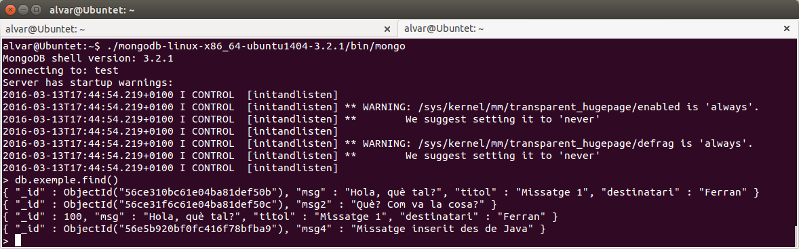

3.4 - Connexió des de Kotlin
Per a poder connectar des de Java o Kotlin ens sera suficient amb un driver, que haurem d'incorporar al projecte. En la següent pàgina podem trobar-lo, en diferents versions:
https://repo1.maven.org/maven2/org/mongodb/mongo-java-driver/
En el moment de fer aquestos apunts, l'últim driver disponible és el següent:
https://repo1.maven.org/maven2/org/mongodb/mongo-java-driver/3.9.1/mongo-java-driver-3.9.1.jar
Per a separar les proves i exercicis de la part de Redis, creem un nou projecte anomenat Tema8_2 , en un paquet anomenat Exemples.
Connexió
La connexió és tan senzilla com el següent:
val con = MongoClient("localhost", 27017)
val bd = con.getDatabase("test")
És a dir, obtenim un objecte MongoClient passant-li al constructor l'adreça del servidor i el port de connexió (que per defecte és 27017).
Posteriorment hem de connectar amb la Base de Dades. Ja havíem comentat en la instal·lació de Mongo que nosaltres només utilitzaríem una Base de Dades ja creada anomenada test. Obtenim un objecte MongoDatabase que farà referència a la Base de Dades, i és l'objecte que utilitzarem a partir d'ara. Evidentment ho podríem haver fet en una única línia.
Si el servidor no el tenim en la mateixa màquina, només haurem de substituir localhost per l'adreça on estiga el servidor.
Per a tancar la connexió:
con.close()Inserció de documents
Des de Kotlin podrem inserir documents amb la mateixa facilitat que des de la consola. Només haurem de crear un objecte Document de BSON (recordeu que és el format intern de Mongo, absolutament similar a JSON). La manera d'anar posant parelles calu valor en aquest document és per mig del mètode put. Fem un exemple molt senzill on senzillament guardem un document amb una parella clau-valor d'un missatge. Guardeu-lo amb el nom Prova1.kt:
import com.mongodb.MongoClient
import org.bson.Document
fun main(args: Array<String>) {
val con = MongoClient("localhost", 27017)
val bd = con.getDatabase("test")
val doc = Document()
doc.put("msg4", "Missatge inserit des de Kotlin")
bd.getCollection("exemple").insertOne(doc)
con.close()
}Segurament traurà avisos en la consola, però només són avisos. Podem comprovar en la terminal com s'ha inserit el document:

Consultes
Tenim el mètode find() per a fer consultes, i li podem posar un document com a paràmetre per a seleccionar determinats documents o traure determinada informació. Guardeu el següent exemple amb el nom Prova2.kt:
import com.mongodb.MongoClient
fun main(){
val con = MongoClient("localhost" , 27017)
val bd = con.getDatabase("test")
val llibres = bd.getCollection("libro").find()
for (llibre in llibres)
println(llibre.get("titulo"))
con.close();
}I com comentàvem podem posar com a paràmetres en el find() per a seleccionar determinats documents, ordenar, etc. Només hem de cuidar que ho hem de posar en JSON (millor dit BSON), i per tant haurem de crear un document per a això. Copieu el següent exemple amb el nom Prova3.kt:
import com.mongodb.MongoClient
import org.bson.Document
fun main(){
val con = MongoClient("localhost", 27017)
val bd = con.getDatabase("test")
val ordenar = Document()
ordenar.put("precio", -1)
val llibres = bd.getCollection("libro").find().sort(ordenar)
for (llibre in llibres) System.out.println(
"Títol: " + llibre.get("titulo").toString() + ". Preu: " + llibre.get("precio")
)
con.close()
}El resultat serà aquest:
Hem pogut observar en l'execució dels exemples anteriors que ens trau una gran quantitat d'avisos. No són errors, sinó senzillament informació de com van les connexions, que mongo torna, i apareixen en l'eixida estàndar.
Si no volem que apareguen podem posar al principi del programa una sentència per a dir que únicament apareguen els errors, i no els avisos. Els errors estarien en la categoria de SEVERE
LogManager.getLogManager().getLogger("").setLevel(Level.SEVERE)
Hem d'importar les classes de java.util. Quedaria el mateix exemple Prova3.kt d'aquesta manera:
import com.mongodb.MongoClient
import org.bson.Document
import java.util.logging.Level
import java.util.logging.LogManager
fun main(){
LogManager.getLogManager().getLogger("").setLevel(Level.SEVERE)
val con = MongoClient("localhost", 27017)
val bd = con.getDatabase("test")
val ordenar = Document()
ordenar.put("precio", -1)
val llibres = bd.getCollection("libro").find().sort(ordenar)
for (llibre in llibres) System.out.println(
"Títol: " + llibre.get("titulo").toString() + ". Preu: " + llibre.get("precio")
)
con.close()
}I el resultat ara serà:
Agregació
Per a poder utilitzar la funció d'agregació, que té tanta potència, ens ho hem de muntar d'aquesta manera:
- Sobre la col·lecció utilitzar el mètode aggregate()
- Com a paràmetres, afegirem un MutableList. Cada element d'ell serà una opció d'aggregate
- Per a cada opció ($match, $project...), utilitzarem el mètode d' Aggregates (una classe del driver de Mongo) amb el mateix nom:
- Per a $match: Aggregates.match()
- Per a $project: Aggregates.project()
- ...
- Dins de cadascun d'aquestos mètodes posarem un document BSon amb les especificacions que necessitem
En aquest exemple farem la selecció (match) dels llibres de l'editorial Planeta, agafant (project) únicament el títol i l'editorial.
La sentència en la consola la faríem així:
> db.libro.aggregate({$match:{editorial:"Planeta"}},{$project:{titulo:1, editorial:1}})
{ "_id" : "9788408117117", "titulo" : "Circo Máximo", "editorial" : "Planeta" }
{ "_id" : "9788408113331", "titulo" : "Las carreras de Escorpio", "editorial" : "Planeta" }
El programa ens quedaria així. Guardeu-lo en en fitxer Kotlin anomenat Prova_Aggregate_1.kt:
import com.mongodb.MongoClient
import com.mongodb.client.model.Aggregates
import org.bson.Document
import java.util.logging.Level
import java.util.logging.LogManager
fun main(){
LogManager.getLogManager().getLogger("").setLevel(Level.SEVERE)
val con = MongoClient("localhost", 27017)
val bd = con.getDatabase("test")
val seleccionar = Document()
seleccionar.put("editorial", "Planeta")
val projeccio = Document()
projeccio.put("titulo",1)
projeccio.put("editorial",1)
val llibres = bd.getCollection("libro").aggregate(mutableListOf(Aggregates.match(seleccionar),Aggregates.project(projeccio)))
for (llibre in llibres)
println("Títol: " + llibre.get("titulo").toString() + ". Editorial: " + llibre.get("editorial").toString()
)
con.close()
}Mirem un altre exemple. Traure el llibre més barat de cada any.
La consulta en Mongo que faríem en la consola de Mongo seria:
> db.libro.aggregate(
{$group : {
"_id" : { "any" : { $year : "$fecha" } } ,
"minim":{$min: "$precio"}}
},
{$sort:{"_id":1}}
)
{ "_id" : { "any" : 2009 }, "minim" : 9.45 }
{ "_id" : { "any" : 2011 }, "minim" : 9.5 }
{ "_id" : { "any" : 2012 }, "minim" : 11 }
{ "_id" : { "any" : 2013 }, "minim" : 17.23 }
{ "_id" : { "any" : 2014 }, "minim" : 15.9 }
Ara col·locarem aquesta sentència en un programa Kotlin. Guardeu el següent codi com el fitxer Kotlin Prova_Aggregate_2.kt:
import com.mongodb.MongoClient
import com.mongodb.client.model.Aggregates
import org.bson.Document
import java.util.logging.Level
import java.util.logging.LogManager
fun main(){
LogManager.getLogManager().getLogger("").setLevel(Level.SEVERE)
val con = MongoClient("localhost", 27017)
val bd = con.getDatabase("test")
val grup = Document()
grup.put("_id", Document("any",Document("\$year","\$fecha")))
grup.put("minim",Document("\$min","\$precio"))
val ordenar = Document()
ordenar.put("_id",1)
val llibres = bd.getCollection("libro").aggregate(mutableListOf(Aggregates.group(grup),Aggregates.sort(ordenar)))
for (llibre in llibres){
val d = llibre.get("_id") as Document
println("Any: " + (d.get("_id") as Document).getInteger("any")+ ". Mínim: " + d.getDouble("minim"))
}
con.close()
}Hem tingut la complicació que el resultat és més complicat, té un document dins d'una altre document (com es veu en el resultat de la sentència executada en la consola). Aquest serà el resultat:

Llicenciat sota la Llicència Creative Commons Reconeixement NoComercial SenseObraDerivada 4.0